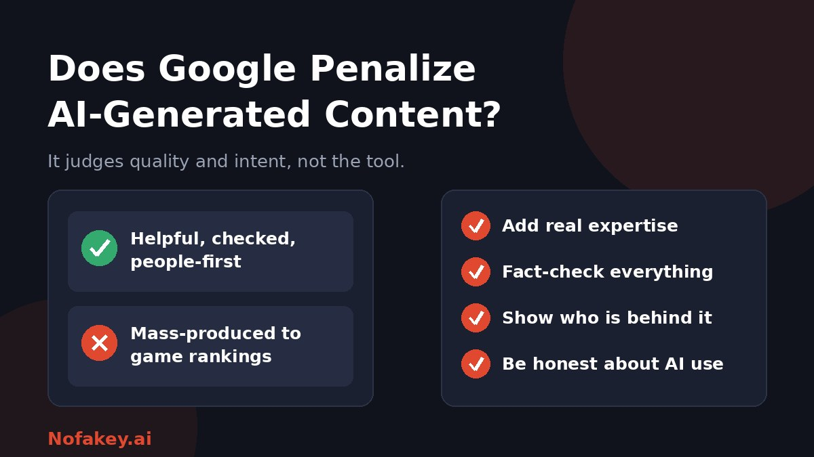

Many site owners worry that using AI to write will get them hit with a Google penalty. Others assume anything AI-made is fine. The truth sits in the middle, and it depends on what you publish, why, and how well it serves readers.
What Google actually says
Google's public guidance on AI content has been consistent since 2023: how a page is produced matters less than whether it is helpful. Using automation, including AI, is not against its rules by itself. Using it to produce lots of pages mainly to climb search results, rather than to help people, is.
Google's spam policies describe this as scaled content abuse, and the policy applies whether the pages are written by people, by AI, or by a mix. Policies change, so check Google's own Search Central documentation for the current wording before you rely on any summary, including this one.
What Google does act against
| Pattern | Why it is a problem |
|---|---|
| Mass-produced pages | Hundreds of near-identical pages made mainly to capture searches |
| Unreviewed AI copy-and-paste | Errors, repetition and no real value added |
| Scraped or lightly reworded content | Nothing original compared with the source |
| Keyword stuffing | Written for search engines, not for readers |
| Misleading or made-up claims | Fake facts, invented quotes or fake expert credentials |
| Thin pages with no purpose | Content that leaves the reader no better off |
Notice what is missing: "written with AI." The common thread is low value and manipulative intent.
Can Google detect AI content?
Google runs systems that find spam and low-quality pages, and it may well recognise patterns in machine-written text. But it describes its goal as rewarding helpful content, not punishing a method. Two sensible takeaways:
- Do not rely on hiding AI use. Hiding low-quality content is a bad strategy either way.
- Do not obsess over detector scores. Third-party AI detectors are unreliable, and they are not what ranks pages. See our guide on whether AI detectors are accurate.
What separates AI-assisted content that does well from content that does not
- Original value. Real examples, first-hand experience, data you collected, or a clear point of view that others do not offer.
- Accuracy. Every fact, name, date and quote is checked by a person.
- Search intent. The page answers the question the reader actually has.
- Clear authorship. Readers can see who is responsible and why they can be trusted on the topic.
- Good experience. Easy to read, fast on mobile, and free of clutter.
- Honesty. No fake reviews, fake experts or invented statistics.
A safe workflow for AI-assisted publishing
- Start with a real reader need, not just a keyword.
- Add what AI cannot: your experience, examples, screenshots, interviews or local knowledge.
- Use AI for drafting or structure, then rewrite in your own voice.
- Fact-check line by line. Remove anything you cannot verify.
- Edit for usefulness. Cut filler, repetition and generic advice.
- Publish fewer, better pages rather than many thin ones.
- Review and update regularly, and remove pages that no longer help anyone.
Should you disclose AI use?
Google does not require a special AI label for ranking. Still, disclosure is often good practice, especially where readers would reasonably want to know, such as health, finance, news and reviews. Some platforms and regions also have their own disclosure rules. Our guide on how to label AI-generated content gives wording you can adapt.
Common myths
- "Any AI use gets a penalty." No. Google's guidance targets spam and low value, not the tool.
- "AI content ranks automatically." No. It must meet the same quality bar as everything else.
- "A low detector score makes it safe." No. Detectors are unreliable and are not how pages are judged.
- "There is a safe percentage of AI." No such number exists. Quality and intent decide.
- "Paraphrasing tools fix it." No. Rewording unoriginal content does not make it original.
Why this matters beyond Google
Unreviewed AI text can carry confident mistakes and invented facts, which hurts readers and your credibility. If you want to see how hidden signals might help identify AI content in future, read our guide to AI watermark detection. And if something online looks off, paste it into our free checker for a quick first read.
Conclusion
Google does not punish AI use as such. It acts against spam and unhelpful pages, whoever or whatever made them. Use AI as a helper, add real expertise, check every fact, and publish for readers first. No approach can promise a ranking, so focus on being genuinely useful and keep an eye on Google's own documentation. Find more guides on the Nofakey.ai blog.
Frequently asked questions
Does Google penalize AI-generated content?
Not simply because AI was used. Google's published guidance says it focuses on whether content is helpful and original, not how it was produced. It does act against spam, including content produced at scale mainly to manipulate rankings.
Can Google detect AI content?
Google has systems for finding spam and low-quality pages, but it says its goal is rewarding helpful content rather than punishing a production method. Do not assume you can hide low-quality content, and do not assume AI use alone will be penalized.
Do I need to label AI content for Google?
Google does not require a special AI label for ranking. Disclosing AI use can still be sensible for trust, especially where readers would expect to know, and some platforms and laws have their own rules.
How much AI is too much?
There is no safe percentage. What matters is whether the page is original, accurate, useful and made for people, with real human review.
Can AI-assisted content rank?
It can, if it meets the same quality standards as any other content. No tool or method guarantees rankings.
Not sure whether something is real or AI-made?
Run it through the checker